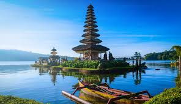
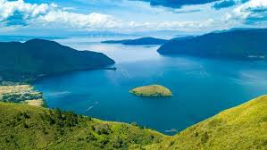
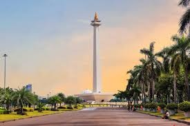
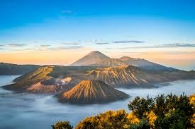
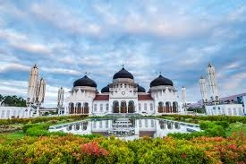
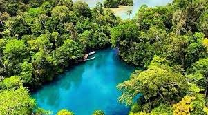
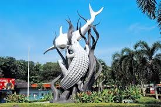
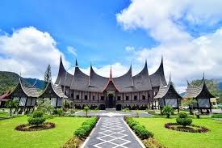
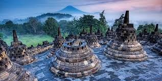

Top Destination
several tourist destinations that must be visited when coming to Indonesia
Bali
Bali is known for its forested volcanic mountains, iconic rice paddies, beaches and coral reefs.
Yogyakarta

Yogyakarta is known for its traditional arts and cultural heritage.
Raja Ampat

Raja Ampat is known for its amazing marine life and coral reefs
Komodo Island

Komodo Island is famous for its Komodo dragons, the largest lizards on Earth.
Lake Toba
Lake Toba is a large natural lake in Sumatra, formed by a supervolcanic eruption.
Jakarta
Jakarta is one of the best tourist destinations in Indonesia.
Photo Gallery





